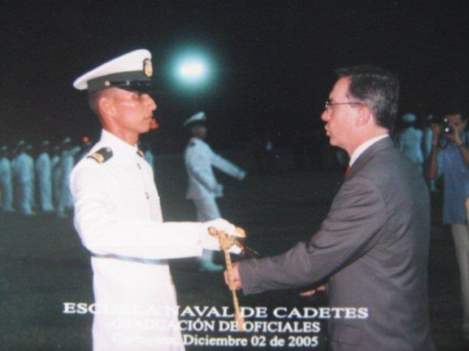
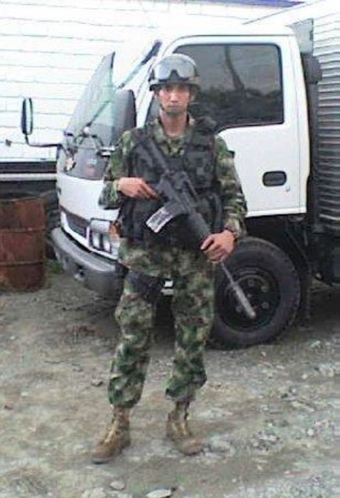
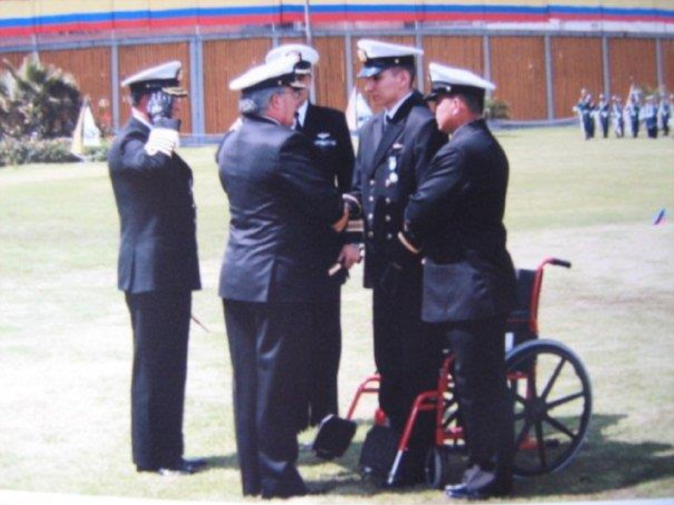

Cuando corría el 06 de julio de 1983 en Cúcuta llegó a este mundo para formar parte del hogar de Robles Mora y hacerle compañía a su hermana Andrea que hoy en día es Ingeniera Electrónica y después, llegó a la vida su hermana Paola que actualmente es abogada graduada de Universidad Militar
Desde que nació mostró los ímpetus de vida que corrían por sus venas y a medida que fue creciendo hizo que la vida bailara a su alrededor. Sus amigos de colegio y de barrio siempre lo seguían y veían en el un líder innato que disfrutaba a plenitud los juegos que planeaban para pasar su tiempo libre.
"Desde los 7 años mis hermanas y yo vivimos con mi mama solamente, ella es la que ha visto por nosotros en todos los aspectos y nos ha sacado adelante".
Realizó sus estudios en su ciudad natal y allí cuando comenzó a conocer mas el mundo se dio cuenta que quería ser militar, quería explorar el mundo siendo un verdadero soldado y conocer muchos lugares para defender a los colombianos de bien.
Realizó sus estudios en su ciudad natal y allí cuando comenzó a conocer mas el mundo se dio cuenta que quería ser militar, quería explorar el mundo siendo un verdadero soldado y conocer muchos lugares para defender a los colombianos de bien.
"Desde pequeño quería estudiar medicina veterinaria, pero cuando estaba en séptimo grado en bachillerato la armada fue a visitar el colegio y quede absolutamente convencido que era lo mío, entre como infante de marina totalmente convencido de lo que era, en el momento de inscribirme a la armada me llamaba mucho la atención las pirañas de los Elementos de combate Fluvial además de las pistas de entrenamiento y los grupos de fuerzas especiales, eso influyo mucho para ingresar como infante de marina".
Por eso cuando culmino sus estudios se presentó a la Armada Nacional para ser Infante de Marina con la convicción de que iba a lograrlo pues ponía fe y decisión en todas as actividades que se comprometía a realizar y esta no fue la excepción: era su futuro y era su sueño.
"El apoyo de mi mama y mis hermanas fue incondicional, me veían convencido de lo que hacia por eso ellas fueron el impulso que yo necesitaba en ese momento".
SURGE UN INFANTE DE MARINA
Cuando ingresó a la Escuela Naval de Cadetes Almirante Padilla en Cartagena su alma no podía abarcar mas ilusión y orgullo, así como los ojos de su madre no podían abarcar mas lagrimas por la partida de su hijo adorado. El también tenía tristeza por dejar su hogar, sus hermanas, sus amigos, pero quería este compromiso para su vida y comenzó su primer “vuelo” solo en la vida.
Su nuevo camino había comenzado entre las aulas, los campos de entrenamiento y los ejercicios militares que templaban día con día su ser, su vida como hombre y como militar, valorando mas a cada minuto su hogar y sus viejos recuerdos en el colegio y con los amigos de barrio.
"Recuerdo las ganas con las que cada uno de mis compañeros de curso hacían todas las actividades desde que iniciamos la escuela, un curso muy unido, todavía se mantiene así"
Por fin llego el día! SOY INFANTE DE MARINA era lo que gritaba su alma el día de su graduación como subteniente entre la admiración y el respeto de los que estaban presentes ese día. Pero no había en el mundo seres más orgullosos y felices que su mamá y sus hermanas quienes desde la tribuna aplaudían sus logros.

Pasaron los días y después de terminar su primera fase de entrenamiento en el Batallón de Entrenamiento de Infantería de Marina Nº 3 en Coveñas, fue destinado al Batallón Fluvial de IM Nº 70 en Tumaco Nariño donde por sus valientes y dedicados logros a los nueve meses de graduado participo en una importante operación donde se obtuvieron notables resultados para la Armada Nacional y por eso le fue otorgada la medalla de servicios distinguidos en Orden público en reconocimiento a su labor por defender a los colombianos de bien.
Y EL AMOR SE LE ATRAVEZÓ EN EL CAMINO
De este mal nadie se salva y nuestro valiente guerrero no estuvo exento a que cupido tocara tempranamente a sus puertas cuando conoció a Angélica Torres una hermosa oficial que llego a trabajar a esa unidad y cautivo su corazón desde que la vió.
“Angélica y yo nos conocimos en Tumáco, los dos estábamos trasladados al BAFLIM 70, ella era la contadora del batallón y yo trabajaba como oficial de planta. Fue algo muy especial y me llamo la atención desde que la conocí. Se puede decir que fue amor a primera vista”
No paso mucho tiempo cuando decidieron casarse porque la convicción de su amor era bastante fuerte y el camino le mostró que ella era su destino.
Después de su matrimonio a finales del 2007, no paso mucho tiempo cuando se completo su felicidad… venia en camino su primer hijo , que después de algunos meses supo que era una niña, lo cual lo lleno de un inmenso amor y alegría.
"Mientras estuvimos en Tumáco prácticamente hacíamos todo juntos, yo salí en diciembre del 2007 de traslado para la Agrupación de Fuerzas Especiales Urbanas # 2 (AFEUR-2) en Buenaventura, mi esposa quedo en Tumáco y pues solicitamos el traslado de ella para Buenaventura también para poder compartir como familia ya que nos encontrábamos esperando a la bebé, las cosas se dieron, llegando a mediados del primer semestre del 2008".
Él y su esposa fueron trasladados para Buenaventura, el para la Agrupación de Fuerzas Espaciales Antiterroristas Urbanas del Pacífico y ella para la Brigada Fluvial de IM Nº 2. Su vida transcurría normalmente y la dedicación a su naciente hogar y a su trabajo quitaban la mayor parte de su tiempo, siempre dedicando un pequeño tiempo para hablar con su familia, contándoles lo feliz que era con Angélica , la llegada de su hijita y lo orgulloso que estaba de ser Infante de Marina.
El trabajo en su nueva unidad era intenso y lleno de altos riesgos, pero que el manejaba con su fortaleza como infante de marina. No habían pasado muchos meses cuando le fue otorgada la medalla Al Valor por su participación decidida con su destacamento en la captura de un importante terrorista de las FARC.
EL TERROR TOCO A SU PUERTA
Ese 03 de junio de 2008 todo transcurría normalmente como Comandante de Destacamento. Se reunió con sus hombres para preparar los registros del día y se tomo un café con ellos y a su lado su mascota labrador negro de nombre Mateo quién se convirtió en su fiel escudero.
“ El día anterior me encontraba trabajando de guardia efectiva. Durante toda esta noche se hizo un gran trabajo: allanamientos, capturas, se incauto armamento, eso nos tomo hasta las 6 de la mañana del día del atentado. Yo sabia de la operación que se iba a desarrollar, días antes se había hecho el planeamiento con información de inteligencia y con el apoyo del CTI de Cali para hacer la captura del bandido pedido en extradición por los EEUU por narcotráfico.
El señor Comandante (e) de la AFEUR-2 me informó que se tenía localizado el sector donde se encontraba la persona que buscábamos. Aliste mi destacamento y lo ubique en ese sector esperando ordenes, yo procedí a cambiarme de civil con un infante de marina, pues teníamos como misión verificar la información suministrada. Después de unas horas aproximadamente a las 10:30 am recibí una llamada diciéndome el lugar exacto donde se encontraba el bandido y las características físicas de cómo se encontraba, procedí a dar aviso a mi destacamento sobre la situación y al comandante encargado de la afeur-2. Inmediatamente me desplace a verificar la información con el IMP en la moto y de ser cierta dar nuevamente aviso a las unidades y que procedieran con la captura. En el momento en que el IMP y yo llegamos al lugar vimos al sujeto tal como nos lo habían descrito. No habíamos terminado de parar la marcha de la moto para dar aviso a las unidades cuando el bandido se nos abalanzó con el arma en la mano y disparándonos en repetidas ocasiones. En ese momento nos caímos de la moto mientras que el bandido seguía disparándome y yo arrastrándome por el suelo evitando ser alcanzado por las balas, cuando sentí que me dejo de disparar me arrodille frente a el y respondí el ataque. Cuando el se sintió herido e intento huir, me levante impidiéndole que se escapara y ahí en ese intercambio de disparos fui impactado e inmediatamente me desplome. Yo me encontraba inmóvil en el suelo, pero conciente, todavía se escuchaban disparos, sabia que el infante aún se estaba enfrentando al bandido y protegiéndome para que no me rematara. Afortunadamente por la rápida reacción del infante de marina se evito la fuga del bandido y lo neutralizó. A él le debo la vida…".
NECESITAMOS AYUDA AGUILA CAIDA.. Águila CAIDA!!!
Mauricio Robles conservó la calma y trato de mantenerse tranquilo. No sentía su cuerpo y comenzó a sentir un agotamiento asombroso. El entre su situación comenzó a buscar todas las fuerzas que tenia y solo le pedía a Dios entre sus débiles murmullos que le permitiera vivir para conocer a su hijita que estaba por nacer.
Necesitamos ayuda… Águila caída, águila caída… oyó desde lo lejos que sus hombres gritaban y al momento sintió los pasos fuertes de varias personas que llegaban corriendo hacia el. Ahí se sintió mas tranquilo porque había llegado la ayuda.
"El personal de mi destacamento llego de inmediato, al igual que un carro del personal de inteligencia donde me embarcaron al instante, yo estuve conciente en todo momento, sentía el apoyo incondicional de mis compañeros de las fuerzas especiales, escuchaba el sonido de las motos de la agrupación a mi lado abriendo paso entre el trafico con rumbo a Sanidad Naval, cuando llegamos me esperaba el personal medico, pero lo mas importante toda la agrupación dándome palabras de aliento para que saliera adelante, los señores comandantes de las unidades de la BRIFLIM-2 y en general todo el personal. Poco después mientras me hacían la valoración medica llego mi esposa acompañada del personal de acción integral y la psicóloga, yo me encontraba conciente, lo que la tranquilizo demasiado, pero de igual manera admiro y agradezco la fortaleza con la ella afronto la situación a pesar de los 6 meses de embarazo, sus ojos y sus palabras me transmitían tranquilidad, serenidad, demasiada calma que me daban muchas mas ganas de vivir, en ese momento solo le dije que todo saldría bien, que estuviera tranquila, que no pasaría nada malo. Después que los médicos me suturaron la herida de la frente, rápidamente me embarcaron en una ambulancia con rumbo a la brigada donde me esperaba un helicóptero para ser evacuado a Cali".
"Durante el recorrido en el helicóptero sentía que las fuerzas de mi cuerpo disminuían, pero las de mi alma y corazón seguían intactas, se hacían mas fuertes por querer vivir, se me cerraban los ojos pero volvía y me impulsaba por mantenerme despierto, le dije al medico que me acompañaba que me golpeara en la cara, que no me dejara dormir porque temía no volver a despertar jamás… Cuando llegamos a Cali me esperaban en la brigada de ejercito donde aterrizamos un ambulancia con un grupo de médicos que prontamente me llevaron a la Fundación Valle de Lily".

El tiempo corría y las posibilidades se iban cerrando los médicos comenzaron una carrera contra el tiempo para evitar que la vida de este gran hombre se esfumara así como así porque sabían que la situación era difícil. Mauricio había sido impactado por un tiro de rebote. El tiro entro por detrás del oído derecho pegando en la parte cervical de la columna y de manera milagrosa rebotando produciendo un recorrido por la cabeza y saliendo por la parte derecha de la frente.
"Inicialmente los médicos en Cali informaron a mi familia que no había nada que hacer, que yo no volvería a mover nada del cuello para abajo, ni aquí en Colombia ni en ninguna parte del planeta".
"Desde el momento que me desplome por el impacto y después de salir del estado de conmoción solo pedía a dios para que me diera la oportunidad de conocer a mi hija, verla nacer, disfrutar cada instante con ella y con mi esposa, poder estar con mi familia, mi mama y mis hermanas, poder tener una oportunidad más de vivir".
LOS MILAGROS EXISTEN…!!!
Después de su traslado a Bogotá al Hospital Militar Central y el diagnostico que había recibido su familia, el les daba el ánimo necesario para creer que él iba a salir de ese estado en el que estaba. Y sus palabras fueron proféticas. No pasó un mes cuando comenzó a recuperar la sensibilidad en todas sus extremidades y la movilidad comenzó a aparecer en sus piernas. Nadie lo podía creer.

Luego de casi tres meses ya estaba en silla de ruedas y a los cinco meses comenzó a pararse. Muestra de esta admirable recuperación la dio el día que le fue impuesto el distintivo de Herido en Combate cuando ante los ojos de los asistentes se puso de pie para ser condecorado.
"Hoy en día creo que debemos aprovechar cada instante, cada milésima de segundo como si fuera la última en la vida, que debemos meterle alma y corazón a todo lo que hacemos, que los obstáculos en la vida Dios nos los pone con el propósito para demostrarnos a nosotros mismos que tan fuertes podemos llegar a ser y para poder darnos cuenta de su grandeza".
Hoy en día se desplaza en bastón y dejo a un lado la silla de ruedas que lo acompañaba. Aunque aún persisten las dificultades para su movimiento nunca lo abandonan el buen humor y las sonrisas que deja por donde pasa, pues se siente un afortunado de la vida no solo por su rápida recuperación, sino por las personas que lo han rodeado a todo momento y que han hecho más amable el transito por esta dura prueba.
Durante el tiempo que permaneció en recuperación, empezó a estudiar la carrera de Ingenieria en Telecomunicaciones, logrando su grado a mediados del 2017. En el año 2018 se retiró del servico activo de la Armada Nacional y en el 2019 nace su segunda hija. Actualmente se desempeña en el área de Desarrollo Web como desarrollador independiente.
"A mis amigos les digo que no podemos agachar la cabeza ante ningún obstáculo en la vida, siempre con la cabeza en alto demostrando el valor, arrojo y valentía en todo lo que hacemos, no podemos ser nunca inferiores al reto que nos impone el destino y nuestro destino es vencer en cualquier momento de la vida".
He aquí la historia de un hombre sencillo que con sus amplios valores nos da un importante ejemplo de cómo afrontar la adversidad y como mostrarle al mundo que a pesar que la oscuridad aparezca en todos los recodos del camino, siempre habrá una luz que nos indique la forma segura de continuar hasta el final.
"DETRÁS DE CADA INFANTE DE MARÍNA, DE CADA SOLDADO, DE CADA MILITAR EXISTE EL APOYO INCONDICIONAL DE UNA FAMILIA QUE SE HACEN REALMENTE HÉROES CON CADA PALABRA DE ALIENTO EN LOS MOMENTOS DIFÍCILES".
Oficial de Infantería de Marína (R), Pedro Mauricio Robles Mora